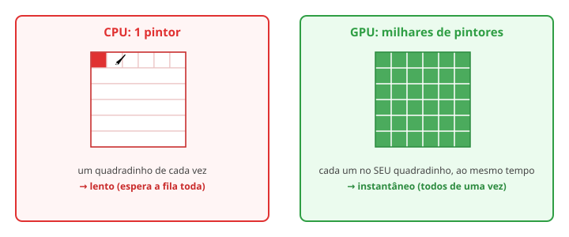

← Mapa do curso · Marco 1 · Módulo 6 de 6
Você já escreveu shaders que pintam, desenham e animam. Falta responder a pergunta que abriu o curso: como isso é tão RÁPIDO? Uma tela cheia tem milhões de pixels, e seu shaderzinho roda pra cada um, 60 vezes por segundo. Se fosse um por vez, travava. O truque é a forma como a GPU trabalha — e você já estava usando o tempo todo, sem saber.
Imagine pintar um mural de 10 000 quadradinhos. Sozinho, você pinta um, depois o próximo, depois o próximo... leva horas. Agora imagine 10 000 pintores, cada um responsável por um quadradinho, todos pintando ao mesmo tempo. O mural fica pronto num piscar. A CPU é o pintor solo; a GPU é o exército.

Os dois quadros abaixo "pintam" uma grade de células. O da esquerda faz como a CPU: enche uma de cada vez, em fila. O da direita faz como a GPU: todas mudam juntas, todo quadro. Olhe os dois lado a lado — qual termina o trabalho antes?
🖌️ 1 pintor (CPU) — em fila
👥 exército (GPU) — todos juntos
Aqui está o segredo do shader, agora explícito: quando você escreve gl_FragColor = ...,
está escrevendo a regra de UM pixel. A GPU pega essa mesma regra e roda em
milhares de núcleos ao mesmo tempo, um por pixel. Por isso seu shader nunca falou
"o pixel do lado" — ele não pode. Cada fragmento é independente, e essa limitação é
exatamente o que deixa tudo voar.
No quadro da CPU, conte mais ou menos quantas células acendem por segundo. Agora imagine uma tela real com 2 milhões de pixels nesse ritmo de "um por vez". Quanto tempo levaria pra desenhar UM quadro? E o jogo precisa de 60 por segundo...
Escreva sua estimativa: ____________. (Spoiler: é por isso que a GPU existe.)
Ligue cada termo ao seu significado (escreva a letra):
Recapitulando o "curso curto": você aprendeu o que é um shader e por que a GPU existe (M1), pintou pixels pela posição (M2), usou funções pra criar transições e ondas (M3), desenhou e combinou formas (M4), deu vida a tudo com o tempo (M5) — e agora entende por que roda tão rápido (M6). Você escreveu código que roda em milhares de núcleos, ao mesmo tempo, 60 vezes por segundo. Isso é programar a GPU. 🎉
Os próximos marcos vão fundo: superfícies 3D de verdade, e o poder bruto da GPU por dentro.
← Anterior: Dando Vida — Animação · Próximo: Marco 2 — Vértices & Pipeline →